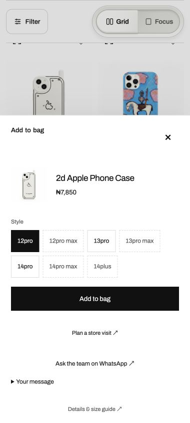

Your task, in view
CRUX website.
—
Reading verified checkpoints…
Verified progress
Goal:
DESIGN / REVIEW HISTORY
Design scorecard
October 3 private shopping journey with floating Stores · 6df2daf4. The Stores repair is on 23a74fac. The combined Runway, garment comparison and store enquiry at d34c0865 has its own first design review. Hands confirmed its review position. No reviewer has graded that revision yet.
Last reviewed · Combined Runway and store enquiry
- Opus 5.5, Astra 6, Fable 5.1 and ArgonUngradedFirst design review admitted for d34c0865. Opus and Astra await seats. Fable’s original connection reported its weekly limit. Argon awaits the chair’s separate decision.
Last reviewed · JEV shopper comparison
- Astra 69.46/10Second review of dd9fa5a6. Lowest criterion 9.2. Original five findings resolved. All five named fixes on dc6c13cf passed the final check. No new grade was issued.
- Argon8.10/10Second review of dd9fa5a6. Lowest criterion 7.5. All five final named findings on dc6c13cf passed. No new grade was issued.
- Fable 5.1 and Opus 5.5Awaiting reviewsFable reported its usage limit. The original Opus review seat is pending. No current feature pass from any of the four readers.
Last reviewed · Runway
- Astra 69.38/10Earlier design b0c747c3. The original sequence was 9.06, 9.32, then 9.38 after a crop correction.
- Opus 5.58.48/10Earlier design b0c747c3. Its lowest score was 7.8 for shopping clarity.
Last reviewed · Whole draft
- Fable 5.19.05/10Earlier full review; lowest measure 8.5.
- Astra 6No overall scoreHouse consistency received 9.0. Nine measures were unscored.
- Opus 5.58.75/10Earlier full review; lowest measure 8.0.
Target: 9.5/10 for each required reader, with no individual measure below 9.
What comes forward from the later build
- Inspect a pieceVerified in the unified private build
Twelve garment entries across five looks. Tap the jersey, compare photos, choose a size or ask a store. A browser journey verifies the selected choice on return.
- Dress the lookIn the private preview
Each numbered piece in the Runway leads to its existing product. Next: verify the unpublished product page, size selection, bag and return to the same look on iPhone.
- Browse the collectionFound in later theme source
Restore Grid and Focus, filters and Save on the collection page. Keep the selected item and scroll position when changing the view or coming back.
- Try it in a shopVerified on the private preview
Open Stores from four pages. The directory link focuses the locations. An enquiry keeps the chosen piece and size when you return.
- Explore Big BagExisting unpublished page
Use its navigation destination for objects and homeware. Verify the trip back to shopping without adding another homepage banner.
0 of 3 final 9.5 passes. Reviews have been completed; their last full scores are in review history.
What changed since last update
- The combined Runway and store-enquiry design entered its first review queue. Its packet ties the garment photos, selected size and store destination to one version. It has no score yet.
- The corrected floating Stores button passed the gallery Pause and purchase-control checks. It entered protected review at 15:19 UTC. The first automated review ended without a verdict. The chair paused the shared failing seat. A completed review and protected checks are still required before draft installation. The next attempt stopped before dispatch. Its original review can retry from 16:59 UTC.
- The small-iPhone workflow finished with seven untested checks. Safari’s Connection Security Details obscured the shopper page. The chair assigned both source fixes to the original writer after the higher-priority teams release a seat.
- The catalogue Options drawer gave feedback in 19–31 ms at 380 px and 18–46 ms at 1280 px. All four narrow interactions stayed within the frame budget. At desktop width, the second open and close exceeded 50 ms. The close included a 57.4 ms frame.
- The TEST tee and signed shopper panel opened. The looks-rail repair passed protected review and merged. Shopify returned the exact reviewed template from the unpublished TEST theme. A shopper visit is still needed to close the third check.
The five delivery gates still open
6/11 counts closed acceptance gates, not tasks or effort. 1/3 counts final milestones: assembly merge is verified; final ratings and draft handover remain. Each gate below retains its owner, original wait and next action. A completed checkpoint is not a completed gate.
- 5. Buyer trust and WhatsApp reviews
Blocker: The staff-login and workspace-selection repairs have merged. Customer care verified twelve checks against served code, including the refusal to insert a reply after the WhatsApp window closes. The last verified TEST conversation window was closed on 25 October. The real buyer consent and withdrawal journey is still open.
Next: Hands checks the admitted TEST conversation and its staff identity. Aftercare then verifies the buyer’s private review, consent and withdrawal, and records the customer-care handoff on the same item.
- 6. Assistant privacy facts
Blocker: Both approved shoppers have distinct TEST profiles, and the notice and settings are installed. Independent session isolation and consent and withdrawal are still unverified.
Next: The original testers bind the two controlled signed sessions on the unpublished TEST preview to the correct shopper and exercise the approved privacy checks.
- 8. Final three-model ratings
Blocker: Final passes remain 0/3. Both full review rounds are consumed; only the original final named-fix checks remain. Earlier-source200% evidence is retained; the newly installed homepage typography still needs its own genuine200% proof; native, connected and remaining performance-contract evidence remain incomplete. The catalogue and Big Bag desktop startup budgets passed. The catalogue drawer passed at 380 px but missed the desktop frame budget at 1280 px. Warm arrival on the small iPhone remains open. Owner: The same Fable 5.1, Astra 6 and Opus 5.5 readers; Website assembles evidence. Wait: No final named-fix call is running or queued; this is a prerequisite wait, not a new review round.
Next: Complete each reader’s named evidence, then return the same installed source to those original readers once. Passing requires average 9.5 or higher and no measure below 9; code approvals do not substitute.
- 10. Completed Shopify draft and handover
Blocker: The seven iPhone checks could not exercise the unpublished draft. The original test owner has the wrong-theme redirect and Safari overlay to repair.
Next: Verify 200% zoom and a real size selection, then check the store directory and its map destinations before handover.
- 11. BIG BAG page and navigation
Blocker: The title is reviewed, merged, installed and fits at 320/380/1280. Remaining native, connected and final-reader evidence uses the same shared prerequisites; no repeat title repair is ready. Owner: Original BIG BAG/native acceptance owner and the same final readers. Wait: Shares the retained native/timing waits above; no separate reset or duplicate allocation request.
Next: Keep the verified title evidence, complete the original native shopping/Back and connected journey checks on the installed source, then include the result in the final named-fix review.
Shopify optimization · parallel track
Separate track: 2 of 2 scoped steps complete. Details below distinguish configuration reads from saved and verified refinements. This adds no delivery-gate credit.
- Completed — Audit existing product copy and settings (08:42Z–08:54Z, took12 min; API refreshed17:55Z–17:59Z; Admin read22:13Z–22:16Z). Prior descriptions and categories are preserved; original SEO repair keeps its owner.
- Completed — Apply optional address line 2 and email marketing unchecked by default in every region (22:54Z–22:56Z, took2 min). Saved once, reloaded and verified both settings; regions dialog shows0 of237 selected. No theme publication.
Lands: settings optimization is complete. Website acceptance continues under the timed plan above.
Explore four systems, original-owner decisions and what is actually verified. →
Supporting work
Capability progress
Explore capability groups
| ID | Capability | Source | Tests | Review | Deployed | Accepted | Next |
|---|
Current draft check · 380px · 21 October
Unpublished draft, 21 October 2026, 05:44–05:54Z, desktop at 380 CSS px. Selecting available 12pro enabled Add to bag and Plan a store visit. No item was added and no store/customer message was sent. This image is scoped desktop evidence, not native, 200% text, timing or final acceptance.


Watch the pet move · verified browser evidence
Historical evidence from 20 October at 09:26:45Z on the installed unpublished draft: automatic movement and all four controls, head tilt, guide open/close and 20 seconds of reduced-motion stillness. Settled 380px/430px views fit at normal text size. These clips do not verify the later pet-only live installation. Touch dispatch was unsupported; no native, 200% text, performance or final-rating credit.

Responsive browser evidence. Touch dispatch was unsupported. Native iPhone, 200% text, performance measurements and final ratings remain separate.
Plan and timing
- Attach the passive looks-rail check to the existing shopper test packet and verify eleven offline cases (13:26Z–13:30Z, took 4 min).
- Measure two catalogue Options opens and closes at both widths and verify the raw frames (14:19Z–14:35Z, took 16 min).
- Return the desktop frame failure with the actual drawer assets to the original repair queue (14:35Z–14:42Z, took 7 min).
- Read all seven hosted iPhone results, inspect the screenshots and trace the source redirect (14:45Z–14:50Z, took 5 min).
- Verify Safari has returned to the product page on the correct unpublished theme, then check genuine 200% zoom. The original writer is next at the assigned priority after the shared seats clear. Next action when Hands places the two original source fixes after the higher-priority writers clear.
- Qualify both ten-second startup checks on the unpublished draft (10:43Z–11:13Z, took 30 min).
- Match the three current stores to their Google listings and check both draft directory templates (10:53Z–11:08Z, took 15 min).
- Recover the original sign-in fix and verify its GitHub revision and 257 checks (10:20Z–10:37Z, took 17 min).
- Restore the missing phone and Stores instructions to the original team’s current worklist (10:34Z–10:40Z, took 6 min).
- Verify protected code approval for the TEST rail (15:01Z–15:05Z, took 4 min).
- Install the merged rail repair on the unpublished TEST theme and verify the complete file inventory (16:17Z–16:18Z, took 1 min).
- Run the protected signed shopper checks once both sign-in repairs merge and are served (timing depends on the second repair).
- Record the owner’s approval of #5250 on the accepted revision (05:01Z–05:04Z, took 3 min).
- Verify the two existing draft files, the three absent files and the two storefront layout mounts (05:08Z–05:16Z, took 8 min).
- Locate the phone gallery conflict and reproduce it at ten scroll positions (05:13Z–05:16Z, took 3 min).
- Repair the overlap and check the actual gallery, purchase controls and store directory (05:17Z–05:26Z, took 9 min).
- Push the corrected source and verify the proof in #5250 (05:28Z–05:29Z, took 1 min).
- Confirm the chair cleared the corrected Stores source for protected review (14:40Z–15:08Z, took 28 min).
- Obtain both Stores component reviews on the accepted revision (waiting for the chair to assign the two original readers).
- Package the Stores button separately and verify its draft pull request (01:33Z–01:56Z, took 23 min).
- Confirm the desk moved Stores into protected review and read the first run (15:19Z–15:26Z, took 7 min). The review service returned an error before issuing a verdict.
- Complete the original Stores review and verify its five merged files on the unpublished theme. Earliest eligible review retry 16:59Z.
- Build the floating Stores icon alongside WhatsApp and fix overlap with the hero and purchase controls (01:08Z–01:28Z, took 20 min).
- Verify the green WhatsApp glyph and ink Stores icon in the served preview, with and without JavaScript (01:28Z–01:32Z, took 4 min).
- Check all 43 saved configurations for the size-evidence switch (01:06Z–01:24Z, took 18 min). Both product templates have it off.
- Reconcile the TEST browser request with the actual queue (23:44Z–23:52Z, took 8 min).
- Match the four-width quantity proof, held bag control and earlier collection timings to the recorded draft (23:48Z–23:56Z, took 8 min).
- Reconcile both TEST access routes with their original owners (23:56Z–00:01Z, took 5 min). The merchant was visible. Its Preview control was inaccessible, and the signed workflow cannot stop after a read.
- Use the exclusive TEST merchant slot (00:10Z–00:12Z, took 2 min). Signed store verified. Themes loaded an empty frame and exposed no Preview button. Browser returned to Hands.
- Compare all 701 files on the unpublished draft and trace the TEST rail request (00:15Z–00:26Z, took 11 min). Correct TEST endpoint returned zero looks.
- Open the actual TEST tee on its protected preview theme (01:23Z–01:24Z, took 1 min).
- Verify the deployed TEST catalogue repair against the approved file (05:46Z–05:50Z, took 4 min).
- Measure first useful product content on three warm draft reloads and attach it to the original review packet (06:05Z–06:27Z, took 22 min).
- Compare the fitting desk with the signed shopper save contract and return the required adapter change (05:56Z–06:00Z, took 4 min).
- Observe the looks request and visible result on one visit to the TEST tee (first requested 22:54Z, installed 16:18Z, est. 5 min after access to the protected preview).
- Verify that a signed TEST shopper can open the styling panel without using Style or Save (01:23Z–01:24Z, took 1 min).
- Qualify the original zoom and size-selection fixes and hand them to the iPhone tester (08:46Z–08:53Z, took 7 min).
- Run the seven small-iPhone checks on #5275, with numeric zoom and a verified 2XL selection (original wait since 08:53Z, returned seven untested results at 14:45Z, repair with original test owner).
- Check ten styled pieces and native selected-size actions on three widths (22:39Z–22:45Z, took 6 min).
- Verify both original second-review reports on the same Runway build (22:24Z–22:45Z, took 21 min).
- Integrate the photo inspection, return, store handoff and mobile detail layout (22:46Z–23:02Z, took 16 min).
- Measure 24 taps and collect both original named-fix results (23:02Z–23:10Z, took 8 min).
- Run the combined suite on the actual integration source (23:09Z–23:10Z, took 1 min). All three tests passed.
- Reduce popup opening work and verify scroll, focus and photos (23:09Z–23:18Z, took 9 min).
- Integrate the faster popup, pass the remote tests and verify the served private journey (23:18Z–23:22Z, took 4 min).
- Obtain the chair’s first-round decision for the combined shopping journey (requested 1 Nov 23:22Z, granted 2 Nov 14:53Z).
- Bind its source, four rendered settings and shopping actions to one verified review packet (14:53Z–14:58Z, took 5 min).
- Collect the original design reads after higher-priority work releases a review seat (next check on the original reader placement after the higher-priority writers clear).
- Reconcile approval and original owners (12:23Z–12:28Z, took5min). The two app URL changes and TEST reconnect are approved.
- Complete the original homepage review (12:25Z–12:43Z, took18min). Design7.0/10; named repairs returned to the original builder.
- Prove the eight named homepage repairs in source (12:48Z–13:27Z, took39min). All31 targeted cases and16 mutation checks passed.
- Review and merge the homepage repair (13:28Z–14:25Z, took57min). #5080 has independent code approval, five passing full-test shards and verified merge5474fc99.
- Install and verify the homepage repair in the unpublished draft (15:25Z–15:37Z, took12min). Five assets replaced; all10 candidate bodies verified. MAIN and untouched draft files preserved. Rendered acceptance remains open.
- Complete protected review for the cart timing repair (13:30Z–16:15Z, took165min). Allfive final full-test shards and test gate passed; #5081 merged asfa7a790d. Test-only change; no Shopify installation needed.
- Restore TEST connection (21:19Z–21:25Z, took6min). App eon-5 released with the two approved URLs; one reconnect verified in TEST Integrations. Original scopes and proxy preserved.
- Review, merge and qualify the iPhone helper (05:20Z–05:26Z, took6min). #5106 merged as9464dd3; exact helper, tests and Small200 workflow source are qualified by receipt39f6e187.
- Run the seven iPhone checks on the installed draft (waiting since 16 October, 20:16 UTC). The first hosted run ended without a qualified result. The 2 November hosted run returned seven untested rows at 14:45 UTC. The original writer has the two specific source fixes.
- Install and verify the eight-file TEST change (21:30Z–21:41Z, took11min). Exact source restored; one eight-file install and all605-file preservation verified. Features stay off.
- Build and prove the three installed homepage repairs (22:04Z–22:19Z, took15min). #5092 is published at2d0f9eb6. All39 targeted cases and11 mutation checks passed; self-review found zero findings. Only two theme assets change.
- Review, merge and install #5092 (22:19Z–23:02Z, took43min). Full five-shard tests and gate passed; protected mergeadc8dae6 and exact two-asset unpublished installation are verified.
- Build and submit the focused slideshow repair (23:19Z–23:30Z, took11min). #5095 exact87d59f2e passed43 cases and10 mutation checks; one Ready mark verified. Protected review and full CI continue.
- Review, merge and install the slideshow repair (23:30Z–00:18Z, took48min). Hosted tests and protected merge passed; exact single-asset unpublished installation verified. Hosted queue and readback extended the estimate.
- Prove the homepage text-size correction (04:29Z–04:32Z, took3min). The original worker ran the unchanged prepared proof once; all4 selected tests and12 mutation checks passed.
- Review and merge the homepage text-size correction (06:07Z–07:15Z, took68min). #5109 passed protected review and all five full-test groups; merged as0be197de.
- Install and verify the homepage text-size correction (08:41Z–08:48Z, took7min). One reviewed CSS asset installed in draft166627606744; exact hosted bytes match; all701 draft files and550 active-theme files preserved.
- Check the installed typography at380/430/1280 (08:52Z–08:55Z, took3min). No horizontal overflow; readable store/arrival headings and44px direction links. Genuine200% and native checks remain unproved.
- Verify installed slideshow controls and responsive fit (00:18Z–00:26Z, took8min). Automatic motion works; Pause held for128seconds; Play resumes. Controls measure44px at380/430/1280 with no horizontal overflow. Native/timing proof stays separate.
- Install and verify the TEST privacy notice and three fields (03:49Z–04:03Z, took14min). Automated policy OFF verified; original policy retained plus only the approved disclosure. Served browser proof and exact configuration bytes match; all unrelated files/settings and MAIN preserved. Assistant stays OFF.
- Complete the original TEST notice-preservation repair (08:57Z–09:05Z, took8min). Exact pushed commit7e130049 verified; original worker reports64 passing cases and50/50 regression checks. Both independent reviews passed; protected merge366c018e is verified at14:49:44. Installation and connected acceptance remain separate.
- Review and merge the TEST notice-preservation repair (14:24Z–14:50Z, took26min). Both original protected reviews approved; #5115 merged as366c018e.
- Install the merged TEST configuration safely (14:52Z–15:15Z, took23min). One three-file draft install passed exact readback; the other602 draft files and all481 active-theme files are preserved. Approved notices/policy survive; the backend flag and shopper acceptance remain separate.
- Test session isolation, consent and withdrawal for the two approved TEST shoppers. Their profiles are distinct. The original signed run needs both sign-in repairs merged and served. One has two code approvals and the other is testing. Next check 14:55Z or a protected result.
- Review, merge and install the quantity-label repair (13:00Z–13:34Z, took34min). #5107 merged as03079c68; one draft CSS asset installed with exact readback and full preservation. A pre-write read failure required reconciliation before the successful single write.
- Check the installed quantity controls (13:34Z–13:35Z, took1min). At380/430/1280 the control is50×44px with zero label overlap and no page overflow. No cart write; genuine200% and native proof remain separate.
- Complete original final named-fix reviews and draft handover (est.unknown until native and connected evidence passes). Final passes remain0/3.
- Verify the public task-site update (03:45Z–03:47Z, took2min). Commit3c40c96 built and all five served files matched.
- Publish the completed TEST notice milestone (04:06Z–04:07Z, took1min). Commit8b8010a built; all five served files match. The latest protected-review state is included in the next snapshot.
- Publish the original authentication PR milestone (19:47Z–19:49Z, took2min). Commit11ada69 built; all five served files match. Draft #5083 remains distinct from review and native acceptance.
- Verify #5109 public milestone update (09:01Z–09:03Z, took2min). Commit033c062 built; all five served files matched.
- Verify the TEST-writer public update (09:07Z–09:09Z, took2min). Commit993f7b3 built; all five served files matched.
- Check the installed homepage and cart at genuine 200% zoom. The 30 October browser request remains open. The original hosted run has returned its Safari overlay and wrong-theme redirect for repair. Next check 15:19Z or an earlier original-writer handback.
- Prepare the TEST repair against actual saved settings (10:46Z–10:49Z, took3min). Only five intended keys change; all three notices survive; rollback restores the exact schema and equivalent settings. This is offline preparation, not activation or installation.
- Consume original proof and iPhone acknowledgment (10:49Z–10:52Z, took3min). Original50/50 regression output and self-review recovered; Hands ACK closes the delivery gap. GitHub recovery and the dated run remain prerequisites.
- Compare the current TEST draft with its installation receipt (08:58–08:59 UTC, 1 min). All three files match and the approved disclosure appears once.
- Check the signed TEST route and send the correction to Hands (08:59–09:02 UTC, 3 min). The source accepts only the TEST shop paired with the TEST workspace. Real shopper acceptance is still open.
- Verify the public dashboard and Argon evidence (09:07Z–09:09Z, took 2 min). Six hosted files matched.
- Reconcile the buyer-review handoff (09:13Z–09:14Z). Two staff/workspace repairs are merged. The original customer-care owner returned twelve served-code checks.
- Install and verify the four Shopping Companion files on unpublished TEST (09:22Z–09:29Z). Four matched the reviewed release. All 601 other files and the active TEST theme were preserved.
- Trace Order help from the installed TEST account page and rehearse its disabled configuration offline (09:49Z–09:55Z). The original shopping-companion owner has the two page addresses and the rollback.
- Check the three TEST shopper roles (10:05–10:14 UTC, 9 min). One account had signed in on 30 October. The owner approved two distinct additional roles. Shopify returned zero matching profiles for both, and zero sign-in emails were sent.
- Check the browser handback (10:13–10:15 UTC, 2 min). Bridge could list the TEST tab. Checkout received it, but its own connection failed before Shopify opened. Hands has the tab again.
- Confirm the TEST registration route (10:30–10:32 UTC, 2 min). Shopify documents that completing email sign-in creates an unmatched shopper’s customer profile. The earlier TEST shopper reached the hosted email-code flow. The two new shoppers have yet to sign in.
- Verify the sign-in test merge (10:46–10:47 UTC, 1 min). #5172 merged after the repaired head was approved. It adds the guest-to-account and sign-out test. Running it with controlled shoppers is still pending.
- Use the scoped registration browser turn (11:02–11:03 UTC, under 1 min). Chrome declined access in the Website tester’s own session before the page opened. The serial turn was returned. Neither shopper received a sign-in email or acquired a profile in this attempt.
- Read both shopper profiles from TEST (12:37–12:38 UTC, 1 min). Shopify supplied the customer sign-in address and returned zero exact profiles for both approved shoppers. This was a read-only check.
- Verify the small-iPhone test source and return the changed scheduling facts (12:38–12:42 UTC, 4 min). The seven cases and the code that identifies the installed draft match the original qualification. The local iPhone 17 was returned. The original device team has the request for a dated hosted run or a queue position.
- Open the TEST customer account for the owner (12:48–12:49 UTC, 1 min). The Mac accepted the request to open the verified sign-in address. The owner can now sign in privately to the two approved accounts. The last store lookup found neither profile.
- Verify the first approved shopper record (12:52–12:53 UTC, 1 min). The original read-only store connection matched the first shopper. The second had no record at this check.
- Verify the second shopper and distinguish the two customer records (12:54 UTC, under 1 min). The owner reported completing sign-in. A single read-only TEST query returned both approved profiles with different identifiers. No consent, withdrawal or deletion was exercised.
- Check whether the signed TEST journey can run (12:55–13:01 UTC, 6 min). The three installed files match, the TEST styling controls point to the expected app paths, and the deployed build is identified. The hosted run has no generic shopper-session input. The passive browser turn was returned without an identity match.
- Recover the October 3 homepage and confirm the Closer Look slot (14:04Z–14:10Z).
- Verify the front and back CRUX photos and identify the studio looks (14:10Z–14:13Z).
- Build the two private Closer Look treatments and verify the original hero (14:10Z–14:20Z, 10 min).
- Provide both scrollable preview links for the owner to compare (14:18Z–14:20Z, 2 min).
- Check both treatments at 380, 430 and 1280 pixels (14:22Z–14:34Z). Touch gestures, desktop controls, keyboard selection and reduced motion passed in the browser test. Native iPhone and independent design ratings remain separate.
- Record the owner’s Runway selection and qualify its selected-only draft package (14:55Z–14:59Z, took 4 min).
- Refine the selected Runway and integrate its draft homepage setting (15:11Z–15:55Z, took 44 min). Rendered corrections and the default-route assembly are committed together.
- Inspect the refined desktop and phone renders (15:55Z–16:15Z, took20min). Enlarged-text wrapping and thumbnail cropping were corrected and the exact final images passed inspection. The original homepage remains preserved.
- Obtain the first available independent Runway rating (16:15Z–16:44Z, took29min). First review9.06/10, minimum8.8; four named refinements accepted for correction. The other review was refused before execution.
- Correct and prove the four named Runway refinements (16:44Z–17:16Z, took32min). Compact phone rows, clear colour notes, named product actions and narrow-phone edge hits passed. Extra time covered a real contact-button overlap exposed by the new check.
- Bind the tested source and refresh the private preview (17:16Z–17:30Z, took14min). All37 draft payloads match the tested build;26 local preview routes were read back.
- Submit the reviewed candidate for protected code review (17:30Z–17:44Z, took 14 min). #5204 is open; admission is tied to the revision.
- Complete the second visual review (17:30Z–17:52Z, took 22 min). All four prior fixes passed; the reviewer inspected 23 images and found one remaining desktop crop.
- Fit the full denim jacket in its thumbnail and compare the neighboring garments (17:52Z–18:00Z, took 8 min). All seven paired photo checks passed.
- Verify the jacket with the original independent reader (18:01Z–18:06Z, took 5 min). The crop passed; the section stands at 9.38/10.
- Verify the second reader’s full review (18:25Z–18:45Z, took 20 min). All 19 required images and all five scores checked.
- Repair the thirteen findings and verify the small-phone press and scroll (18:45Z–19:11Z, took 26 min). All 41 browser checks passed.
- Recover the original proof, inspect the renders and update the interactive preview (19:11Z–20:30Z, took 79 min). Network transport delayed the original files. The two blank zoom screenshots were excluded.
- Rebuild against current main and update the protected PR (20:30Z–20:34Z, took 4 min). All 37 emitted files and the rendered default homepage matched byte for byte.
- Build and serve the white stage, floor circle and five-look selector (20:33Z–20:42Z, took 9 min).
- Put the animated look breakdown into the interactive private preview (20:47Z–20:56Z, took 9 min). All 26 local route checks passed.
- Exercise the combined Runway and wardrobe in the browser (20:54Z–20:59Z, took 5 min). Sixty of 64 checks passed.
- Correct the enlarged-text layout shift and measure completed motion (20:59Z–21:15Z, took 16 min). Three early animation readings were replaced with completion readings. All 53 focused checks passed.
- Build one garment hotspot from the approved photo and test comparison and return at phone and desktop widths (21:52Z–21:59Z, 7 min).
- Obtain independent ratings for this design and protected review of the exact revision (reviewer timing unknown).
- Install and verify the selected homepage in the unpublished Shopify draft (est. 15 min after required reviews pass).
Lands: handover timing depends on the protected shopper render, the repaired small-iPhone check and the three final reviews.
Last full reviews · Fable 9.05 · Opus 8.75 · Astra unqualified
Astra’s whole average is unknown. These are existing full-review results, not new scores. Only the original final named-fix checks remain.
Current work
Tap for detailPresenter: connecting · Worker: unknown
Published through GitHub Pages. This task site can be updated through the saved GitHub checkout independently of ChatGPT sign-in. The timestamp above is the last verified evidence; it is not a live activity indicator.